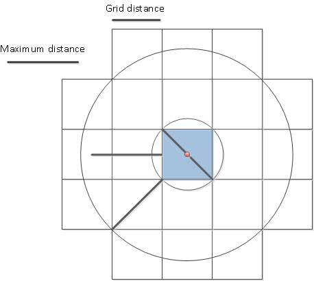
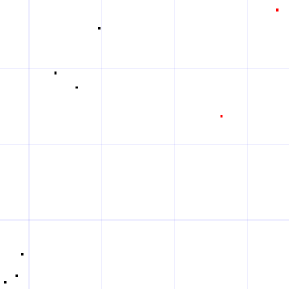
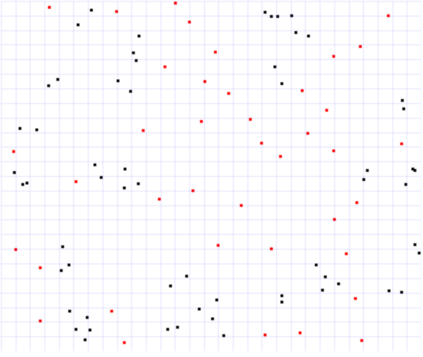

Single detection
Here I define single detection as data which has a certain minimum distance to every other data.
It can be used for anomaly detection or outlier detection of data set. It can also be used for collision detection.
Reference links:
Project implemented in C# is available at Github:
A survey of techniques for fixed radius near neighbor searching:
Given a list of points in 2D dimension how can you find the ones which are not close to the other points?
I will include my Big O notation calculations and some test runs of the implementations.
There is a naive implementation in O(n2).
There are also better alternatives which runs faster than the naive version.
First generate a grid of squares like this and put all your data in the grid according to their positions in the dimension.

In the figure above there is a single item illustrated with a red dot inside the blue box.
For anomaly detection iterate the grid boxes and find those which has a single item inside a box. Those items are candidate as an anomaly item. If there are multiple items inside the blue box then it cannot be a candidate as an anomaly item because of the distance constraint. The candidate can be anywhere inside the box, thus the outer circle shows which areas that must be examined. If there is no other item inside the outer circle, then we know the candidate is an anomaly. On worst case 20 boxes must be examined as illustrated above.
Euclidean distance is used.
The relation between the max distance and grid square distance can be calculated using Pythagoras.
Max Distance = c
Grid box distance = a
c2 = a2 + a2 => a = sqrt( (c2) / 2)
Naive version algorithm:
For all the points check the distance to every other point.
Searching: O(n2)
Grid version algorithm:
Insert all the items in the grid buckets.
Take the neighbor items of the candidate item's grid. You will select items from 20 boxes as a worst case. Then iterate all the items and test the distance. If all the distance are above the maximum allowed then the candidate is detected as an anomaly.
This algorithm is much better than the naive version, runs very fast and is relatively simple to implement. Each grid box is a bucket of items. Use a Hash table for each bucket.
Inserting the items into the grids take O(n). Removing and inserting an item takes O(1).
Searching for anomalies take O(m * n).
If there are A anomalies in the data set and m grids this algorithm will run in:
Initialization: O(n + m) + Searching: O(m * A * n/A) => O(m * n)
K-d tree with nearest neighbor algorithm:
Insert all the items in the grid buckets takes O(n).
Do also apply a K-d tree data structure. From the candidate item's in the box apply the first nearest neighbor algorithm. If the distance is above maximum allowed then it is detected as an anomaly.
It take O(n log n) time to generate the K-d tree. The nearest neighbor search takes
O(log n).
Removing and inserting an item takes O(log n). If there are A anomalies in the data set and m grids then searching for anomalies take O(m * A * log n).
This algorithm will run in:
initialization: O(m + n * log n) + Searching: O(m * A * log n)
Test results
With my test runs of items randomly distributed data the grid version performs best. The naive version is very slow. The K-d Tree version is much faster than the naive version.
I found this C# K-d Tree implementation with nearest neighbor search which I used for testing the algorithm.
Sample picture:

The test runs are the time to detect the anomalies, the searching running time.
The data structure initialization is not included.
For n = 1.000.000.
K-d Tree it took about 30 seconds.
Grid and Naive about 2 seconds.
Random distributed, n = 100
Algorithm: Milli seconds: Single detection found:
NeighborGrid 12 40
K-d Tree 128 40
Naive 2 40
Random distributed, n = 10.000
Algorithm: Milli seconds: Single detection found:
NeighborGrid 141 8384
K-d Tree 2543 8384
Naive 36421 8384
Random distributed, n = 20.000
Grid: 4286 x 3572
MaxDistance: 0.2
Algorithm: Milli seconds: Single detection found:
NeighborGrid 1434 18682
K-d Tree 5878 18682
Naive 129401 18682
Random distributed, n = 30.000
Grid: 1705 x 1421
MaxDistance: 0.5
Algorithm: Milli seconds: Single detection found:
NeighborGrid 521 27100
K-d Tree 7936 27100
Naive slow
grid size is smaller thus the NeighborGrid runs fast.
Random distributed, n = 50.000
Grid: 4286 x 3572
MaxDistance: 0.2
Algorithm: Milli seconds: Single detection found:
NeighborGrid 1472 42268
K-d Tree 13361 42268
Naive very slow
Random distributed, n = 1.000.000
Grid: 1705 x 1421
MaxDistance: 0.5
Algorithm: Milli seconds: Single detection found:
NeighborGrid 983 35824
K-d Tree 23966 35824
Naive forever
Conclusion
These are just sample runs from random distributed data.
If the number of anomalies were very high and the data set were different then the K-d Tree algorithm might run faster. I would guess that the data set would have to be very specific and not likely to be a common scenario. I have given my best estimated Big O running time analysis for the algorithms.
The algorithm runs fast because of the single item grid box test. First they iterate the grid and skip every grid box except for those who has a single item inside. If you expect few anomalies for large data set then this would run very fast because most grid boxes would be skipped for further examination. Thus the running time for anomaly search is closer to O(m) for A << n.
If you are working with dynamic data where positions changes, then the Grid algorithm will run faster because of the O(1) operations. With K-d tree you will have to rebuild the tree occasionally and delete/update takes O(log n).
Sample picture for n = 100
